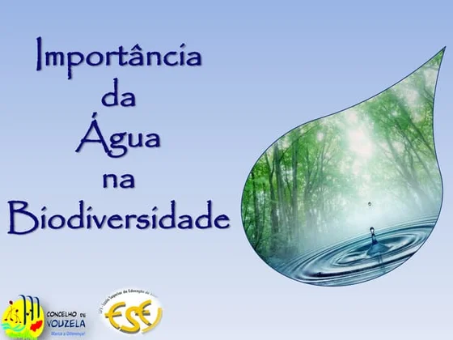
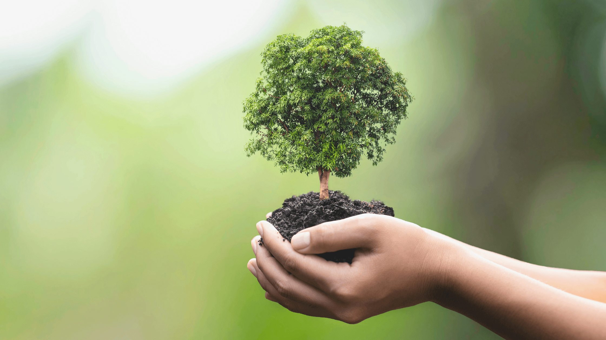
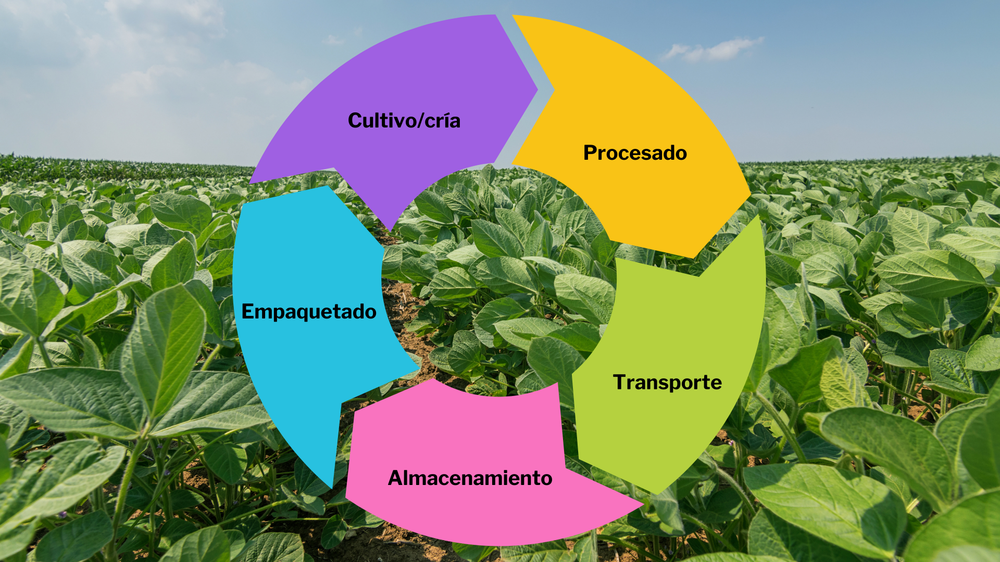

A Água na Agricultura
A água é um recurso essencial para a agricultura. Sem ela, as plantas não crescem, e nossa alimentação seria impossível. No entanto, é fundamental usá-la de forma consciente para evitar desperdícios e garantir sua disponibilidade para as futuras gerações.
Sistemas de irrigação eficientes, como a gotejamento, ajudam a usar a água de maneira mais inteligente, levando o recurso diretamente para a raiz da planta, diminuindo a evaporação e o escoamento desnecessário.
Biodiversidade Local: Pilar da Vida e da Agricultura
A biodiversidade, ou diversidade biológica, refere-se à vasta variedade de vida em nosso planeta, englobando desde os menores microrganismos do solo até as grandes florestas e os animais que nelas habitam. No contexto do Paraná e da agricultura, a biodiversidade local é um tesouro que garante a resiliência e a produtividade dos ecossistemas agrícolas.
Em um ambiente agrícola saudável, a presença de uma rica diversidade de espécies desempenha funções cruciais:
- Polinização: Abelhas, borboletas, besouros e outros insetos polinizadores são essenciais para a reprodução de inúmeras culturas, como soja, café, frutas e vegetais. Sem eles, a produção de alimentos seria drasticamente reduzida.
- Controle Natural de Pragas: Diversas espécies de aves, insetos (como joaninhas e vespas) e microrganismos atuam como inimigos naturais de pragas agrícolas. Manter esses "aliados" na lavoura reduz a necessidade de agrotóxicos.
- Fertilidade do Solo: Microrganismos do solo, como bactérias e fungos, são fundamentais para a decomposição da matéria orgânica, ciclagem de nutrientes e formação de solos férteis, essenciais para o desenvolvimento das plantas.
- Recursos Genéticos: A variedade de plantas nativas e cultivares tradicionais representa um banco genético valioso, que pode ser utilizado para desenvolver novas variedades mais resistentes a doenças, pragas ou mudanças climáticas.
- Qualidade da Água: Vegetação nativa e áreas de mata ciliar protegem os rios e nascentes, filtrando a água e prevenindo a erosão do solo, o que impacta diretamente a qualidade da água disponível para a agricultura e consumo humano.
Preservar a flora e fauna nativas ao redor das lavouras, criar corredores ecológicos e adotar práticas de agricultura que valorizem a vida no solo são ações vitais para manter a biodiversidade. Pequenas atitudes, como plantar flores que atraem polinizadores ou evitar a queima de restos culturais, fazem uma grande diferença para o equilíbrio natural e a sustentabilidade da produção de alimentos.
No Paraná, a riqueza da biodiversidade do Bioma Mata Atlântica e dos Campos Gerais é um patrimônio que devemos proteger. Cada espécie tem um papel, e a perda de uma delas pode desequilibrar todo o ecossistema, afetando diretamente a agricultura e a vida de todos.
O Ciclo do Alimento
O ciclo do alimento é o caminho que a comida percorre desde a produção até chegar à nossa mesa e, idealmente, o que acontece com as sobras. Começa com o plantio, o crescimento e a colheita, passa pelo transporte, processamento e distribuição, até o consumo.
Compreender esse ciclo nos ajuda a valorizar o alimento e a evitar o desperdício. Práticas sustentáveis em todas as etapas, como compostagem de resíduos orgânicos e consumo de produtos locais, são fundamentais para um ciclo mais saudável para o planeta.
Saiba Mais
Gostou do nosso projeto? Quer saber mais sobre a importância da água, biodiversidade e o ciclo do alimento? Explore mais recursos educativos ou entre em contato para tirar suas dúvidas!